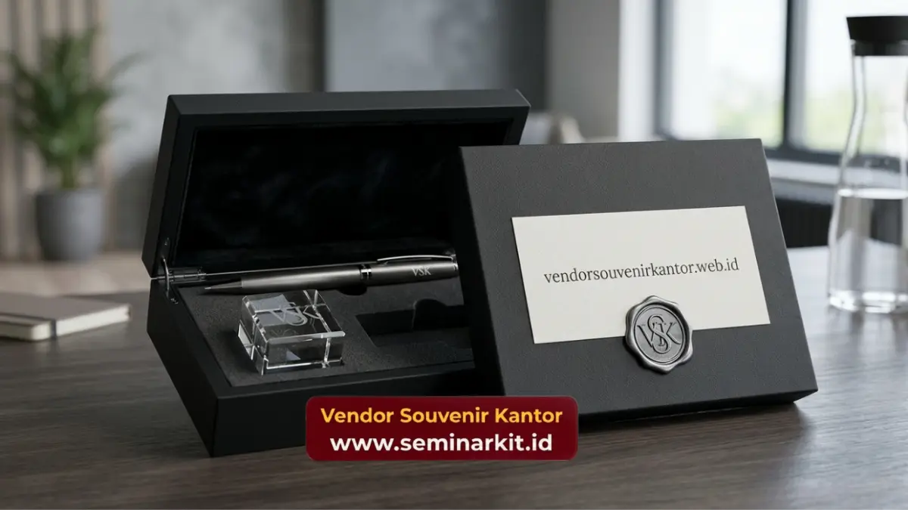

Souvenir corporate gifts adalah merchandise bernilai bisnis yang dirancang khusus untuk mempererat hubungan perusahaan dengan klien, mitra, dan karyawan.
Produk ini umumnya dicetak dengan logo perusahaan dan dipilih berdasarkan kualitas, kesan premium, serta relevansi terhadap identitas brand.
Vendorsouvenirkantor.web.id menyediakan layanan pembuatan souvenir corporate gifts custom logo yang siap mendukung kebutuhan korporat Anda, mulai dari acara penghargaan hingga gathering klien.
- Souvenir corporate gifts berfungsi sebagai media branding sekaligus bentuk apresiasi kepada klien dan karyawan.
- Pemilihan jenis souvenir sebaiknya disesuaikan dengan target penerima dan tujuan acara.
- Custom logo pada souvenir corporate gifts meningkatkan brand recall dan kesan profesional perusahaan.
- Kualitas bahan dan proses produksi menentukan daya tahan serta persepsi nilai souvenir di mata penerima.
- Vendorsouvenirkantor.web.id membantu perusahaan mewujudkan souvenir corporate gifts sesuai kebutuhan dan anggaran.
Apa Itu Souvenir Corporate Gifts?
Souvenir corporate gifts adalah kategori merchandise yang dibuat khusus untuk kepentingan bisnis, biasanya diberikan pada momen tertentu seperti kunjungan klien, seminar, ulang tahun perusahaan, atau penghargaan karyawan.
Berbeda dengan souvenir umum, souvenir corporate gifts dirancang dengan standar kualitas lebih tinggi karena mewakili citra perusahaan secara langsung.
Souvenir corporate gifts, mencakup berbagai kategori produk: alat tulis premium, tumbler custom, tas kerja, jam dinding, plakat penghargaan, hingga paket hampers korporat. Semua produk tersebut dapat dicetak dengan logo, tagline, atau warna khas perusahaan sesuai brand guideline.
Mengapa Souvenir Corporate Gifts Penting untuk Perusahaan?
Souvenir corporate gifts penting karena berfungsi sebagai alat komunikasi non-verbal yang memperkuat hubungan bisnis jangka panjang.
Pemberian souvenir yang tepat dapat meningkatkan loyalitas klien, mempererat hubungan kerja tim, dan memperluas eksposur brand secara organik setiap kali produk tersebut digunakan.
Beberapa manfaat utama souvenir corporate gifts bagi perusahaan meliputi:
Meningkatkan Brand Recall dan Eksposur Logo
Setiap kali penerima menggunakan souvenir corporate gifts di ruang publik atau kantor, logo perusahaan Anda ikut terlihat oleh orang lain.
Memperkuat Hubungan dengan Klien dan Mitra Bisnis
Pemberian souvenir corporate gifts pada momen kunjungan, negosiasi, atau perayaan kerja sama menunjukkan apresiasi perusahaan terhadap relasi bisnis.
Hal ini membantu membangun kepercayaan dan memperkuat posisi tawar dalam hubungan jangka panjang.
Meningkatkan Engagement dan Loyalitas Karyawan
Souvenir corporate gifts juga efektif digunakan sebagai bentuk penghargaan internal, misalnya untuk karyawan baru, ulang tahun perusahaan, atau pencapaian target kerja.
Produk yang dipilih dengan baik dapat meningkatkan rasa memiliki karyawan terhadap perusahaan.
Jenis Souvenir Corporate Gifts yang Populer di Kalangan Perusahaan
Pemilihan jenis souvenir corporate gifts sebaiknya disesuaikan dengan target penerima, anggaran, dan tujuan pemberian. Berikut kategori yang umum digunakan perusahaan di Indonesia:
- Alat tulis premium seperti pulpen metal dan notebook custom cover
- Drinkware seperti tumbler stainless steel dan botol minum custom logo
- Tas kerja dan tas laptop dengan bordir logo perusahaan
- Plakat dan trophy penghargaan untuk momen formal
- Paket hampers korporat berisi kombinasi produk premium
- Gadget accessories seperti power bank dan flash disk custom
Setiap kategori memiliki karakteristik berbeda dalam hal daya tahan, kesan yang ditimbulkan, dan kesesuaian dengan jenis acara.
Produk seperti plakat dan trophy lebih cocok untuk momen formal bernilai simbolis, sementara drinkware dan alat tulis lebih fleksibel digunakan sehari-hari sehingga eksposur brand berlangsung lebih lama.

Bagaimana Cara Memilih Souvenir Corporate Gifts yang Tepat?
Memilih souvenir corporate gifts yang tepat memerlukan pertimbangan matang terhadap tujuan pemberian, profil penerima, dan anggaran yang tersedia. Berikut faktor-faktor yang perlu diperhatikan.
Sesuaikan dengan Target Penerima
Souvenir untuk klien VIP sebaiknya berbeda dari souvenir untuk karyawan internal. Klien korporat umumnya lebih menghargai produk dengan kesan eksklusif dan kemasan premium.
Sementara karyawan lebih menyukai produk fungsional yang dapat digunakan sehari-hari.
Perhatikan Kualitas Bahan dan Proses Produksi
Kualitas bahan menentukan daya tahan souvenir sekaligus persepsi penerima terhadap perusahaan.
Souvenir corporate gifts yang mudah rusak justru dapat menimbulkan kesan negatif terhadap brand.
Sesuaikan dengan Identitas Brand
Warna, desain, dan pesan yang tercetak pada souvenir sebaiknya konsisten dengan identitas visual perusahaan agar memberikan kesan profesional dan terintegrasi dengan strategi branding secara keseluruhan.
Perhitungkan Anggaran secara Proporsional
Anggaran souvenir corporate gifts sebaiknya disesuaikan dengan skala acara dan jumlah penerima.
Pembelian dalam jumlah besar umumnya memberikan efisiensi biaya per unit yang lebih baik.
Kesalahan Umum dalam Memilih Souvenir Corporate Gifts
Beberapa kesalahan yang sering terjadi dalam pemilihan souvenir corporate gifts antara lain memilih produk generik tanpa customisasi, mengabaikan kualitas demi harga murah, serta tidak mempertimbangkan relevansi produk dengan kebutuhan penerima.
Kesalahan-kesalahan ini dapat mengurangi efektivitas souvenir sebagai media branding dan justru menimbulkan kesan kurang profesional.
Perusahaan juga sering terlambat melakukan pemesanan sehingga tidak memiliki cukup waktu untuk proses desain dan produksi custom logo.
Idealnya, pemesanan souvenir corporate gifts dilakukan minimal beberapa minggu sebelum acara berlangsung agar hasil produksi maksimal.
Wujudkan Souvenir Corporate Gifts Terbaik Bersama Vendorsouvenirkantor.web.id
Vendorsouvenirkantor.web.id hadir untuk membantu perusahaan Anda mewujudkan souvenir corporate gifts custom logo berkualitas, mulai dari konsultasi desain, pemilihan bahan, hingga proses produksi yang efisien.
Dengan pengalaman melayani berbagai kebutuhan korporat, tim kami memahami pentingnya souvenir yang tidak hanya menarik secara visual tetapi juga mencerminkan profesionalisme perusahaan Anda.
Jangan biarkan momen penting perusahaan Anda berlalu tanpa kesan mendalam. Kunjungi vendorsouvenirkantor.web.id sekarang untuk konsultasi gratis dan dapatkan penawaran souvenir corporate gifts yang sesuai dengan kebutuhan serta anggaran perusahaan Anda.
Souvenir corporate gifts adalah investasi strategis yang mendukung branding, mempererat hubungan bisnis, dan meningkatkan loyalitas klien maupun karyawan. Pemilihan jenis, kualitas, dan waktu pemesanan yang tepat akan menentukan efektivitas souvenir sebagai media komunikasi perusahaan.
Percayakan kebutuhan souvenir corporate gifts perusahaan Anda kepada vendorsouvenirkantor.web.id untuk hasil yang profesional dan tepat waktu.

Banner promosi: klik gambar untuk langsung terhubung ke WhatsApp tim sales.